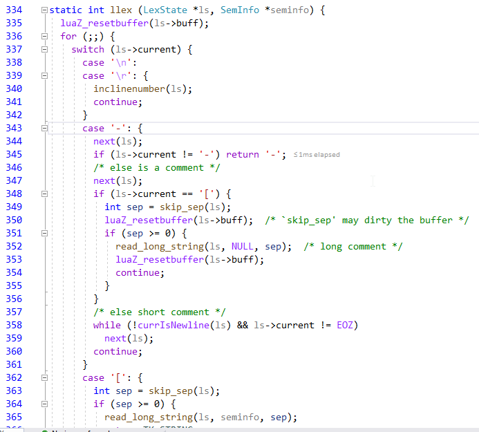
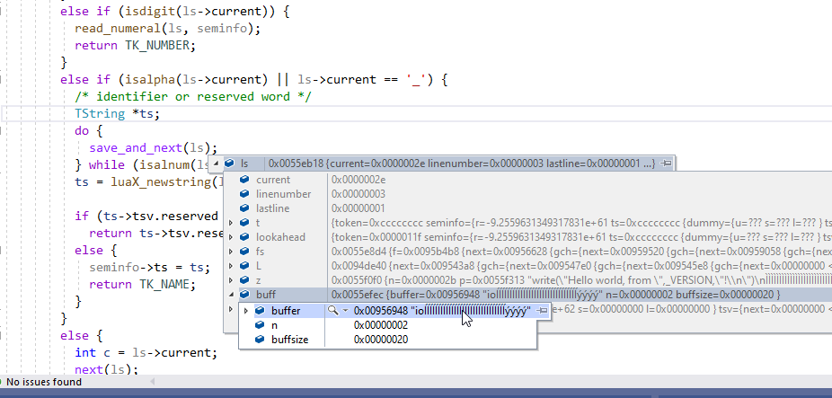
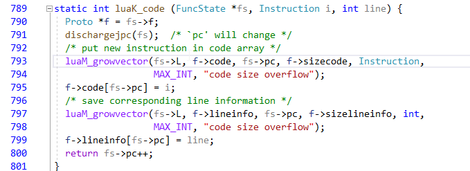
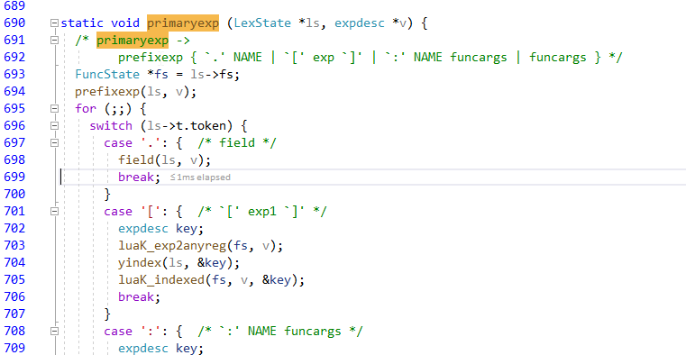
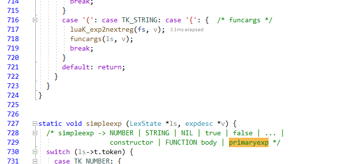
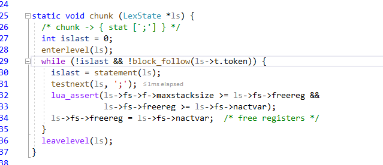

Lua-5.1 编译分析一
分析lua的很多了，这里记录一下我的。
词法分析
lua-5.1词法分析在llex.c中，为了表达状态机lua实现了lexstate来存储使用的数据其中Mbuffer类型的buff每次会情况重置，然后从zio中再读一个字节
赋给current， next()会读一个字符，如图：

前端将文件token化读入，token化

解析变量名luaX_newstring转换成一个tstring存进语义seminfo中，然后返回当前为token_name类型。
zio
其中zio读取文件到内存中处理,省去频繁文件i/o读增加效率.
lookahead
字节码转换指令生成
例如：
helloworld.lua
-- the first program in every language
io.write("Hello world, from ",_VERSION,"!\n")
首先读的- 然后判断第二个token是不是‘-’如果是则为注释。
然后根据chunk处理
/* chunk -> { stat [`;'] } */
然后展开为stat：
/* stat -> func | assignment */
自上而下展开，主表达式primaryexp：
/* primaryexp ->
prefixexp { `.' NAME | `[' exp `]' | `:' NAME funcargs | funcargs } */
然后根据 . token展开：field 展开-》luaK_dischargevars
来判断变量类型：展开成lua5.1字节码存储起来成表达式信息。
如图：

然后读io 为token_name类型，则认为时global变VGLOBAL，

然后展开.write函数.
再到primaryexp函数解析函数（）调用:

生成调用函数的call 寄存器保存指令，然后 保存函数参数到hash表，然后保存栈，然后括号匹配.
完成后下一行语句。

整体自上而下展开。
后端执行
后端执行在执行在vm中执行，在\src\lvm.c是vm代码。luaV_execute执行指令。这里执行的指令已经是翻译好的字节码了。
ZJ
没有过多的剖析代码的细节，只分析总体大纲，在基础上有清楚认识之后开始单独分析。下面二、三将分析具体的实现细节。